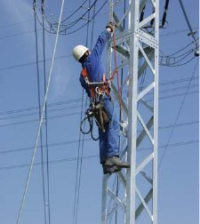
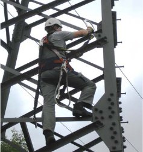
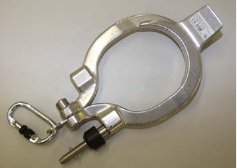
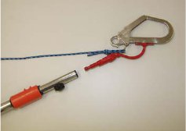
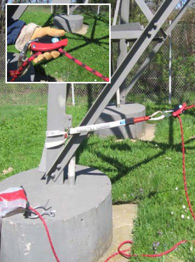
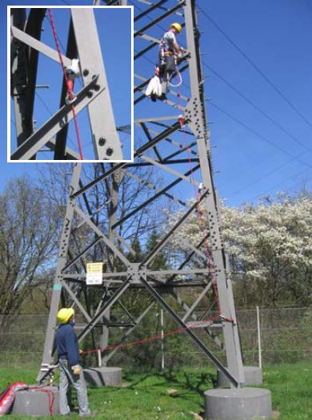
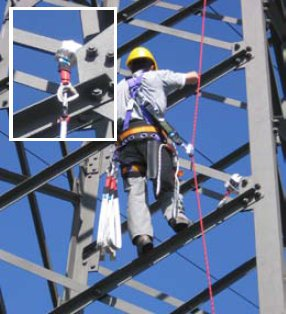
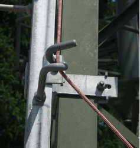
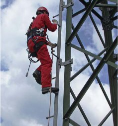
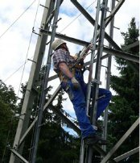

Bei der „Y-Seil“-Methode werden zwei Verbindungsmittel abwechselnd zur Sicherung gegen Absturz eingesetzt. Hierdurch ist sichergestellt, dass der Versicherte beim Besteigen von Freileitungen zu jedem Zeitpunkt gegen Absturz geschützt ist.

Abb. 38
Beispiel für den Einsatz eines Y-Seiles gemäß Abb. 26 beim Besteigen eines Notgestänges.

Abb. 39
Beispiel für den Einsatz zweier Verbindungsmittel gemäß Abb. 29 mit integrierter Falldämpffunktion.
Die Kletterstangen-Methode hat sich für den Einsatz an Masten geringer Bauhöhen bewährt, bei denen ein Umsetzen der Kletterstange nicht erforderlich ist.
Beim Einsatz der Kletterstangen-Methode wird wie folgt verfahren:
Beim Einsatz der Kletterstangen-Methode darf der Anschlagpunkt nicht überstiegen werden.

Abb. 40
Beispiel für einen Klapphaken

Abb. 41
Beispiel für einen Rohrhaken
Die Schlaufen-Methode ist eine Sicherungsmethode bei der unter Anwendung eines Sicherungsseils und mehrerer, durch Bandschlaufen gebildeter Anschlagpunkte ein gesichertes Besteigen von Masten für die erste aufsteigende und zuletzt absteigende Person ermöglicht. Das Sicherungsseil wird dabei von einer am Boden befindlichen Person über eine Seilbremse entsprechend dem Auf- oder Abstieg der zu sichernden Person ausgegeben bzw. eingeholt.
Nach Befestigung des Sicherungsseils an einem, über dem Arbeitsplatz liegenden Anschlagpunkt kann das Seil als bewegliche Führung unter Benutzung eines mitlaufenden Auffanggerätes von weiteren Personen verwendet werden.
Für den Einsatz der Schlaufen-Methode sind u.a. zu beachten:

Abb. 42
Beispiel für ein am Mastfuß installiertes Sicherungsseil mit „Sicherungsgerät“. Das Seil wird entsprechend dem Aufstieg aus dem Transportsack nachgeführt.

Abb. 43
Der erste aufsteigende Versicherte installiert mit Bandschlaufen und Karabinerhaken Anschlagpunkte und hängt das Sicherungsseil in diese ein. Während des gesamten Aufstiegs ist er an einer Auffangöse seines Auffanggurtes am Sicherungsseil gesichert. Der Versicherte am Boden führt die erforderliche Seillänge nach. Im Absturzfall blockiert die Seilbremse das nachlaufende Sicherungsseil. Ein Retten ist durch weiteres Nachlassen des Sicherungsseils unmittelbar möglich.

Abb. 44
Nach Befestigung des Sicherungsseils an einem Anschlagpunkt können weitere Versicherte mittels mitlaufendem Auffanggerät den Mast besteigen.
Der Einsatz von PSAgA an Steigbolzen mit Sicherheitseinrichtung (siehe auch Abschnitt 4.3) ist in der Anwendung vergleichbar mit der Schlaufenmethode. Die Funktion der Schlaufen wird von den fest installierten Steigbolzen mit Sicherheitseinrichtung übernommen.
Die Anforderungen gemäß Abschnitt 6.3 sind zu erfüllen.

Abb. 45
Beispiel für einen Steigbolzen mit Sicherheitseinrichtung mit eingefädeltem Sicherungsseil

Abb. 46
Beispiel für einen Steigbolzengang. Um die Absturzhöhe möglichst gering zu halten, ist hier jeder vierte Steigbolzen mit einer Sicherheitseinrichtung ausgeführt.
Feste Führungen sind ausschließlich mit den zum System gehörenden mitlaufenden Auffanggeräten zu benutzen.
Das mitlaufende Auffanggerät ist ausschließlich über die Steigschutzöse oder die vordere Auffangöse mit dem Auffanggurt zu verbinden.

Abb. 47
Bei der Benutzung mitlaufender Auffanggeräte an festen Führungen und gleichzeitiger Durchführung von Arbeiten haben sich die Versicherten zusätzlich mit der Haltefunktion zu positionieren.